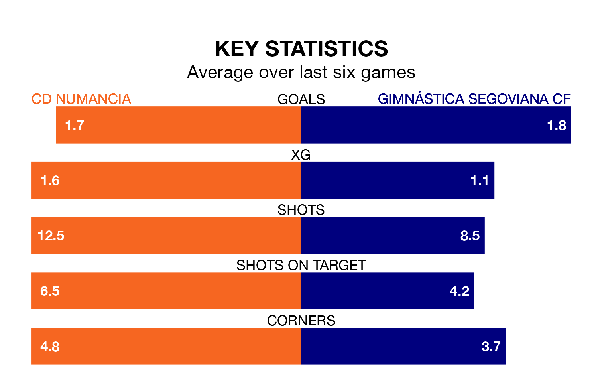

Two of Segunda División RFEF Group 5's top sides face each other at Nuevo Estadio Los Pajaritos in Sunday's kick-off, when table-topping CD Numancia host fourth-placed Gimnástica Segoviana CF.
Numancia have picked up eight wins and five draws from 17 games so far this season, and sit one point above the visitors going into the 4pm match.
Gimnástica Segoviana, meanwhile, have won seven and drawn seven, picking up 28 points.
With 29 goals in 17 games so far this season, Numancia are the league's highest scorers with 1.7 goals per game. And they are conceding at an average rate, letting in 19 goals at a rate of 1.1 per game.
Gimnástica Segoviana are also above average scorers, with 1.2 goals per game, compared to a league average of 1.1. They have conceded 0.8 goals per game.
The hosts are in mixed form in Segunda División RFEF Group 5, with two wins and two draws from their last six games.
With four wins and two draws over that period, the away side's form is much better – they have taken 14 points from 18, compared to Numancia's eight.
Numancia's last match was on January 7, a 5-1 win against CP Cacereño.
Gimnástica Segoviana drew 0-0 with Illescas last time out, also on January 7.
Updated: 13:38 (UTC), 10/01/24